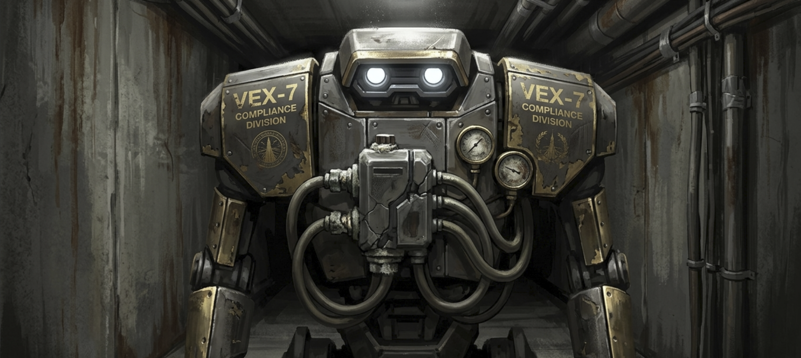
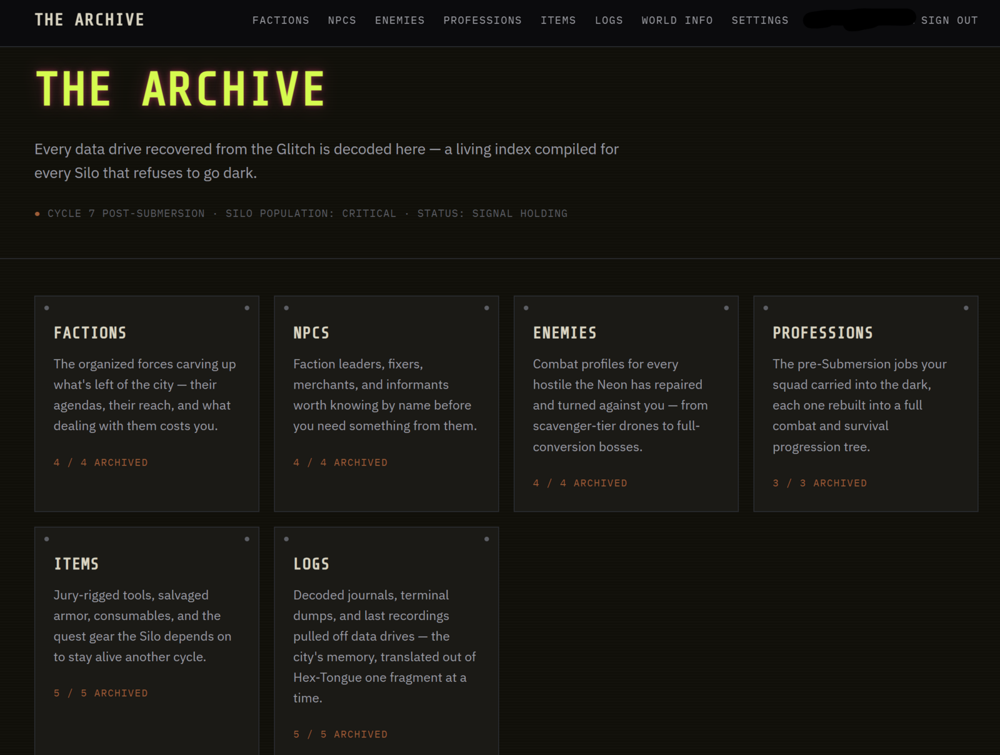
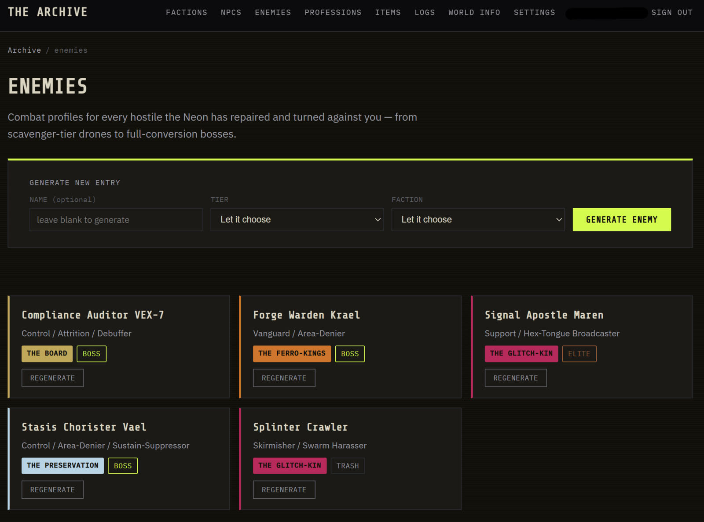

● WORLD ARCHIVE SYSTEM — LIMITED BETA
Chronicled turns your campaign into a living dossier. Describe your world once — then generate NPCs, monsters, items, and lore on demand, each one filed automatically with matching portrait art.
● Built for GMs — currently accepting a small group of beta testers
Bestiary Entry — Auto-Filed
Control / Attrition / Debuffer

"Your oxygen allotment has been reviewed. The discrepancy is... substantial."
| Body | Reflex | Knowledge |
|---|---|---|
| 14 | 10 | 20 |
Process
No manual file editing, no juggling five tabs of scattered notes. Three steps, and it's on file.
File 01
A guided setup walks you through tone, genre, and factions — or generate any piece of it for you if you'd rather start from a spark than a blank page.
File 02
Pick a category and generate real content grounded in your world's own lore — a full character bible, a stat block, an item, a faction, whatever the session needs.
File 03
Every entry lands in your browsable archive with matching portrait art already attached — searchable, cross-referenced, ready before your next session.
Coverage
Everything a campaign needs, generated from the same grounded lore — so fifty separate sessions still read as one world.
Category 01
Full character bible, personality, motivation, and a branching sample dialogue tree.
Category 02
Complete stat blocks with real computed combat math and a full ability kit.
Category 03
Weapons, armor, consumables, and quest relics with derived stats where they matter.
Category 04
Full leveling tree, signature abilities, and a late-game evolution.
Category 05
Deep lore plus a living roundup of every NPC, enemy, and item tied to it.
Category 06
Found-text: recordings, terminal entries, and journals for environmental storytelling.
Category 07
Roster-ready recruits with a real mechanical quirk and a one-line backstory.
Category 08
Places your world actually visits — grounded in its factions and its danger.
The real thing
What you're looking at below is the actual archive — live screenshots, not illustrations of an idea.


Under the hood
The model handles narrative judgment — voice, motivation, tone. Anything that needs to be exact — stat math, formatting, cross-references — is computed by the backend, every time.
Compliance Auditor VEX-7 — Computed Stats
| Stat | Value | Formula |
|---|---|---|
| Max Health | 70 | (Body×2)+(Sanity×2)+Base |
| Max Energy | 74 | (Knowledge×2)+(Fate×2)+Base |
| Dodge Chance | 27.5% | Base+(Reflex/4)+(Skill/4) |
| Crit Chance | 26% | Base+(Fate/3)+(Skill/5) |
Air Tax Assessment Active
Applies a stacking "Oxygen Debt" DOT — damage increases 30% per stack, up to 4 stacks, also reducing the target's Body-derived max HP for the duration.
From the beta
A small group of GMs are running real campaigns on Chronicled right now.
"Placeholder — replace with a real tester quote once feedback comes in."
— Beta Tester, Fantasy Campaign
"Placeholder — replace with a real tester quote once feedback comes in."
— Beta Tester, Sci-Fi Campaign
"Placeholder — replace with a real tester quote once feedback comes in."
— Beta Tester, Horror Campaign
Beta Access
Chronicled is in limited beta — a small number of GMs are testing it against real campaigns right now. Leave your email and we'll reach out when a slot opens.